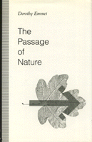

<body bgcolor="#FFFFFF" text="#000000" link="#0000FF" vlink="#CC0000" alink="#CC0000"><center><hr width="350" size="1" align="center" noshade>The idea of "process" as a key concept in describing what goes on in the world<hr width="350" size="1" align="center" noshade><p><a href="https://cdcshoppingcart.uchicago.edu/Cart/ChicagoBook.aspx?ISBN=9780877228967&&PRESS=temple" target="_top">Buy this book!</a> | <a href="https://cdcshoppingcart.uchicago.edu/Cart/Cart.aspx?PRESS=temple" target="_top">View Cart</a> | <a href="https://cdcshoppingcart.uchicago.edu/Cart/Cart.aspx?PRESS=temple" target="_top">Check Out</a></p><p></p></center><!--none//--><h1>The Passage of Nature</h1>
<h3>Dorothy Emmet</h3>
<P>cloth 0-87722-896-5 $49.95, Jun 92, <FONT COLOR=#990033>Out of Stock Unavailable</FONT>
<BR> 208 pp
</P><p>The concept of Process is often used but seldom, if ever, discussed. In this book, Dorothy Emmet looks at how a process differs from a succession of events, facts, or even just things changing. She delineates three kinds of process, or "goings on"&#151artificial, as in the building of a house; natural, as in physiological changes; and social, as in human political activities. Emmet claims that Causation is best seen in terms of processes. She describes the general characteristics of what it is to be a process as well as the special characteristics of organic and social processes, and explains why it is profitable to think of them as processes. Finally, she explores the possible significance of the notion of process for morals and religion and proposes what might be called "providential processes."
<p>As her title suggests, the author acknowledges the influence of an early interest in Alfred North Whitehead's philosophy of process and she critically discusses some of his views. But this is not an exegesis of Whitehead; it is an original metaphysics in which the passage of nature is seen as carried on through the activities, sometimes creative, of things and persons sustaining processes, while at the same time some of them form a distinct kind of particular called a "thing-in-process."
<BR>&nbsp;<h2>Contents</h2><P>
<p>Preface
<br>1. The Idea of a Process
<br>2. Events and Facts
<br>3. Events and Facts in Causation
<br>4. Causal Processes
<br>5. Things in Processes and Things-in-Process
<br>6. Organic Processes
<br>7. Social Processes
<br>8. Creative Processes
<br>9. Providential Processes?
<br>Appendix: Aristotle's Conception of <I>Kinesis</I>
<br>Notes
<br>Bibliography
<br>Index
</P><BR>&nbsp;<H2>About the Author(s)</H2>
<P><b>Dorothy Emmet</b> is Professor Emeritus of Philosophy at the University of Manchester.</P>
<BR><H2>Subject Categories</H2>
<p><A HREF="/tempress/philosophy.html" TARGET="_top">Philosophy and Ethics</a>
</p>
<p align="center"><a href="https://cdcshoppingcart.uchicago.edu/Cart/ChicagoBook.aspx?ISBN=9780877228967&&PRESS=temple" target="_top">Buy this book!</a> | <a href="https://cdcshoppingcart.uchicago.edu/Cart/Cart.aspx?PRESS=temple" target="_top">View Cart</a> | <a href="https://cdcshoppingcart.uchicago.edu/Cart/Cart.aspx?PRESS=temple" target="_top">Check Out</a></p><p><font face="Arial" size="1"><a href="copyright.html" onMouseOver="window.status='Web Copyright Policy';return true;" onMouseOut="window.status=''" title="Web Copyright Policy">&copy;</a> 2015 <a href="http://www.temple.edu" target="new" onMouseOver="window.status='Link to Temple University home page';return true;" onMouseOut="window.status=''" title="Link to Temple University home page">Temple University</a>. All Rights Reserved. http://www.temple.edu/tempress/titles/916_reg.html</font></p>